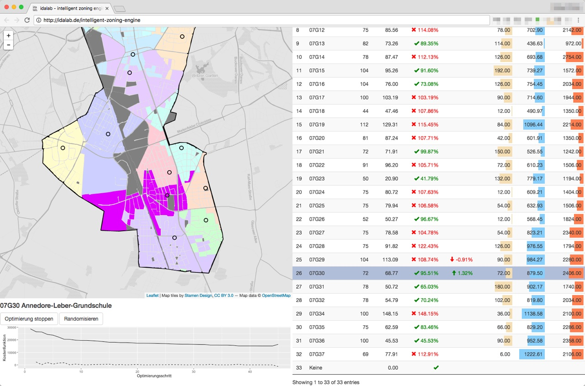

Grundschulplätze besser zuordnen
Der Einschulungsbereicherechner im Raum Berlin
Die Berliner Verwaltung weist Schulplätze anhand von festgelegten Kriterien und auf der Grundlage von Einschulungsbereichen zu. Dabei gibt es zwei wesentliche Probleme: Erstens ist der Prozess vergleichsweise intransparent und wenig effizient. Zweitens ist der Zuschnitt jeder Einschulungsbereiche längere Zeit nicht mehr überprüft und den sich ständig verändernden Bedingungen angepasst worden. Die letzte von der Verwaltung vorgeschlagene Neuzuschneidung der Einzugsgebiete ist an politischer Akzeptanz gescheitert. Die Zuschneidung der Einschulungsbereiche ist aber das wesentliche Mittel zur Justierung der wichtigen Kriterien altersangemessener Schulweg und Schulwegsicherheit. Gegen die Zuweisung ihres Kindes an eine nicht gewünschte Schule reichen Eltern außerdem immer wieder Klage ein und verweisen dabei auch auf (angeblich) nicht eingehaltene Kriterien oder auf die Tatsache der Nichtanpassung der Bereiche. Das belastet die Verwaltung zusätzlich und erschwert den Planungsprozess, sowohl von Jahr zu Jahr als auch langfristig.
Das im Rahmen eines Pilotprojekts entstandene Tool “Einschulungsbereicherechner” unterstützt die Verwaltung bei der Zuschneidung von Einschulungsbereichen für Grundschulen. Entwickelt wurde es von einem Projektkonsortium, dem das Bezirksamt Tempelhof-Schnöneberg, die Senatsverwaltung für Wirtschaft, die Technologiestiftung Berlin, die Stiftung Neue Verantwortung und die idalab GmbH angehören.
 Das Tool bietet im Wesentlichen zwei Funktionen: 1. Eine optimierte automatische Zuordnung von Häuserblöcken zu
Grundschulen unter Berücksichtigung vorgegebener Parameter und Beschränkungen. 2. Analyse eines bestehenden
Zuordnungsschemas hinsichtlich der Auslastung einzelner Schulen und unter Berücksichtigung eines altersangemessenen
und sicheren Schulwegs. Das Tool unterstützt so einen objektiven und transparenten Planungsprozess, der eine
gleichmäßige Auslastung der bestehenden Grundschulen bewirkt idealer Weise auch und zu einer Reduzierung von
Elternwechselwünschen führt. Darüber hinaus kann es auch zur Planung neuer Schulstandorte und zur Prüfung
alternativer Szenarien eingesetzt werden.
Das Tool bietet im Wesentlichen zwei Funktionen: 1. Eine optimierte automatische Zuordnung von Häuserblöcken zu
Grundschulen unter Berücksichtigung vorgegebener Parameter und Beschränkungen. 2. Analyse eines bestehenden
Zuordnungsschemas hinsichtlich der Auslastung einzelner Schulen und unter Berücksichtigung eines altersangemessenen
und sicheren Schulwegs. Das Tool unterstützt so einen objektiven und transparenten Planungsprozess, der eine
gleichmäßige Auslastung der bestehenden Grundschulen bewirkt idealer Weise auch und zu einer Reduzierung von
Elternwechselwünschen führt. Darüber hinaus kann es auch zur Planung neuer Schulstandorte und zur Prüfung
alternativer Szenarien eingesetzt werden.
Aktuell befindet sich das Tool in der Beta-Version und soll zunächst im Berliner Bezirk Tempelhof-Schöneberg eingesetzt werden, der in mancher Hinsicht den Berliner Durchschnitt abbildet. Ein Einsatz in anderen Bezirken und Bundesländern ist mit den durch die Bildungshoheit der Länder verbundenen Einschränkungen grundsätzlich ebenfalls denkbar.
- Schulstandorte
- Hauskoordinaten
- OSM für Schulwege-Routing (via OSRM)
- Tatsächliche Nutzung (welche Häuser sind Wohngebäude)
- LOR
- Einwohnerstatistik auf LOR-Ebene
- RBS Blöcke
- Einwohnerdichte auf Block/Blockteilfächen-Ebene (zur Interpolation der Einwohnerstatistik auf Block-Ebene)
- Anmeldezahlen für Grundschulen
- Einwohnerzahlen auf Block-Ebene
- sozioökonomische Daten auf Block-Ebene
 Von dem neuen Instrument zur Berechnung der Einschulungsbereiche profitieren zahlreiche Akteure, allen voran die Berliner Schüler, für die ein altersangemessener Schulweg und Schulwegsicherheit gewährleistet wird.
Die Berliner Verwaltung kann darüber hinaus eine besser Auslastung von Schulen erzielen und mithilfe des Programms neue Schulstandorte besser planen. Dabei nimmt das kartenbasierte Planungstool die automatische und optimale Zuschneidung von Einschulungsbereichen immer unter Berücksichtigung vorgegebener Restriktionen und Präferenzen vor. Für die Eltern entsteht so ein transparenter Prozess, der ihrem Bedürfnis nach dem Besten für ihr Kind, Rechnung trägt.
Auch die Grundschulen profitieren von dem Einschulungsbereicherechner und dem objektiven, transparenten Planungsprozess. Denn dieser wird zu einer gleichmäßigeren Auslastung der Grundschulen führen, die zudem frühzeitiger bestimmbar ist. Zusätzlich kann mit dem Planungstool die soziale Zusammensetzung an den Schulen gesteuert und sozialer Segregation vorgebeugt werden.
Von dem neuen Instrument zur Berechnung der Einschulungsbereiche profitieren zahlreiche Akteure, allen voran die Berliner Schüler, für die ein altersangemessener Schulweg und Schulwegsicherheit gewährleistet wird.
Die Berliner Verwaltung kann darüber hinaus eine besser Auslastung von Schulen erzielen und mithilfe des Programms neue Schulstandorte besser planen. Dabei nimmt das kartenbasierte Planungstool die automatische und optimale Zuschneidung von Einschulungsbereichen immer unter Berücksichtigung vorgegebener Restriktionen und Präferenzen vor. Für die Eltern entsteht so ein transparenter Prozess, der ihrem Bedürfnis nach dem Besten für ihr Kind, Rechnung trägt.
Auch die Grundschulen profitieren von dem Einschulungsbereicherechner und dem objektiven, transparenten Planungsprozess. Denn dieser wird zu einer gleichmäßigeren Auslastung der Grundschulen führen, die zudem frühzeitiger bestimmbar ist. Zusätzlich kann mit dem Planungstool die soziale Zusammensetzung an den Schulen gesteuert und sozialer Segregation vorgebeugt werden.
Robert leitet eine Grundschule in Berlin-Schöneberg und die Zuordnung der Grundschulplätze für die neuen Erstklässler bereitet ihm jedes Jahr Kopfschmerzen. Auf welcher Grundlage erfolgen die Zuordnungen? Wo verlaufen die Grenzen der Einschulungsbereiche? Die Zahl der wechselwilligen Eltern steigt, so dass of noch kurz vor den Sommerferien die Klassenzusammensetzungen nicht klar sind. Auch die soziale Zusammensetzung der Klassen beobachtet Robert mit immer mehr Sorge, denn Moden der bei Eltern besonders beliebten Schulen sorgen für Konzentrationen. Und die Leidtragenden all dessen sind am Ende im Grunde immer die Kinder.

Dann hört Robert von einem neuen Planungstool für die Zuschneidung der Einschulungsbereiche im Bezirk Tempelhof-Schöneberg, das aktuell in der Entwicklung ist. Zunächst befürchtet er, dass sich damit nur ein neues Instrument für die Verwaltung, aber noch kein besseres Ergebnis für die Grundschulen gefunden wurde. Als er genauer nachhört, stellt sich heraus, dass mit Hilfe von offenen Daten automatisch eine optimale Zuschneidung von Einschulungsbereichen gemäß vorzugebenden Restriktionen und Präferenzen möglich sein soll. Immer noch ist Robert skeptisch. Wird diese Anwendung wirklich den Schulen, Schülern und Eltern helfen? Aber als er erfährt, dass mit dem Planungstool die Zuordnung der Einschulungsbereiche zum ersten Mal transparent nachvollzogen warden kann, regt sich sein Interesse und er fragt beim Bezirksamt nach. Hier darf er schon einmal vorab die Beta-Version ausprobieren und mit mehreren Parametereinstellungen experimentieren.
 Auf einer Karte kann er die Zuschneidung der Einschulungsbereiche optisch nachvollziehen. Die aus den Vorgaben
resultierenden Daten werden auf der Ebene der einzelnen Schulen exportfähig generiert. Zusätzlich können bei
laufender Zuschnittsoptimierung einzelne Wohnblöcke aufgrund entsprechender Planungsnotwendigkeiten händisch
bestimmten Schulen fest zugeordnet werden. Diese Zuordnungen werden im weiteren Optimierungsprozess als zusätzliche
Restriktionen berücksichtigt. So kann beispielsweise durch die Begrenzung des Anteils von Kindern aus
lehrmittelzuzahlungsbefreiten Haushalten sozialer Segregation entgegengewirkt werden.
Auf einer Karte kann er die Zuschneidung der Einschulungsbereiche optisch nachvollziehen. Die aus den Vorgaben
resultierenden Daten werden auf der Ebene der einzelnen Schulen exportfähig generiert. Zusätzlich können bei
laufender Zuschnittsoptimierung einzelne Wohnblöcke aufgrund entsprechender Planungsnotwendigkeiten händisch
bestimmten Schulen fest zugeordnet werden. Diese Zuordnungen werden im weiteren Optimierungsprozess als zusätzliche
Restriktionen berücksichtigt. So kann beispielsweise durch die Begrenzung des Anteils von Kindern aus
lehrmittelzuzahlungsbefreiten Haushalten sozialer Segregation entgegengewirkt werden.
Für Roberts Planung bedeutete die Einführung des neuen Planungstools, dass er mit einer höheren Planungssicherheit rechnen könnte, was die Auslastung und soziale Zusammensetzung seiner Schule angeht.
Daher hofft er, dass die Entwicklung bald abgeschlossen werden kann, damit zum neuen Schuljahr im Bezirk Tempelhof-Schöneberg Schulplätze effizienter, transparenter und besser vergeben werden können. Und sobald die Praxis erstmal gezeigt haben wird, welche Vorteile das Tool für alle Beteiligten eröffnet, dann werden sicherlich auch andere Berliner Bezirke es für ihren Schulplatzvergabeprozess einsetzen, da ist sich Robert sicher.
Weiter lesenProjektbeschreibung bei Government 2020, dem Blog des Behördenspiegel: http://www.government2020.de/blog/?p=1768
Projektbeschreibung bei codefor.de: http://codefor.de/blog/open-data-verwaltung-grundschuleinzugsgebiete